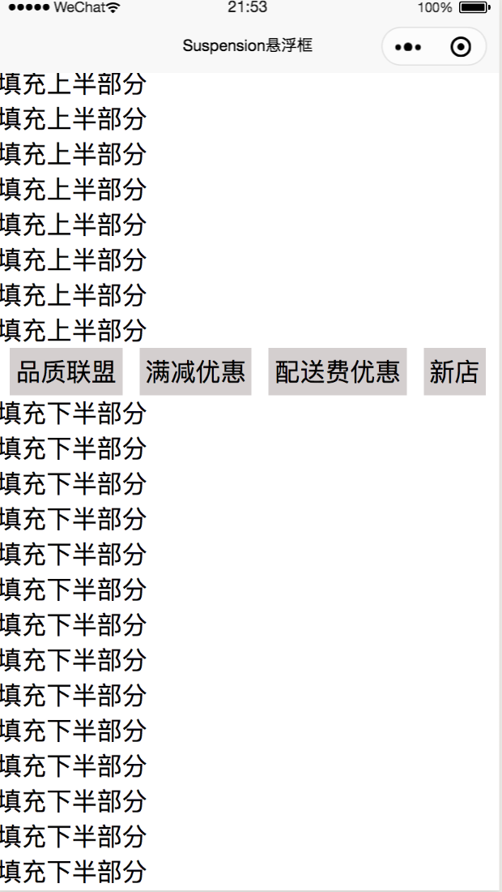
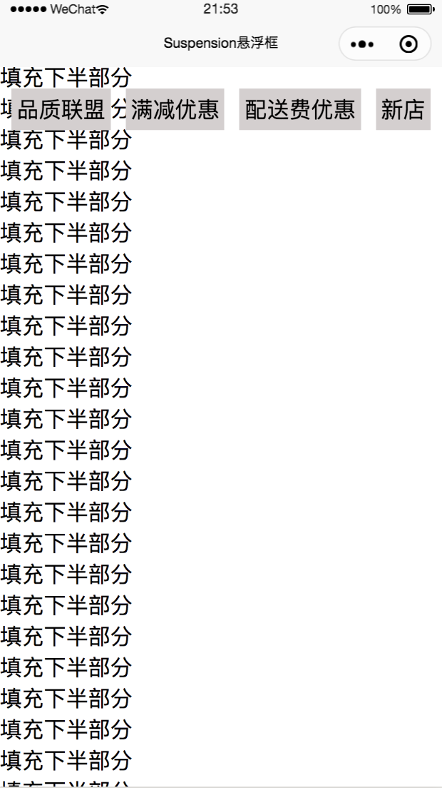

uni-app悬浮框模板原文出处:本文由博客园博主老梁讲Java提供。
原文连接:https://www.cnblogs.com/sky-chen/p/11029131.html
1. uni-app悬浮框模板
1.1. 目标
- 模仿饿了吗app的悬浮框效果，即上移过程中，中间的某个组件框到顶部后不再上移，呈类似置顶的效果
1.2. 问题
- 中间遇到fixed固定组件导致flex失效问题，这会导致样式的混乱，后通过这篇文章解决
1.3. 效果
- 最后实现效果


1.4. 移步
具体代码见我的github